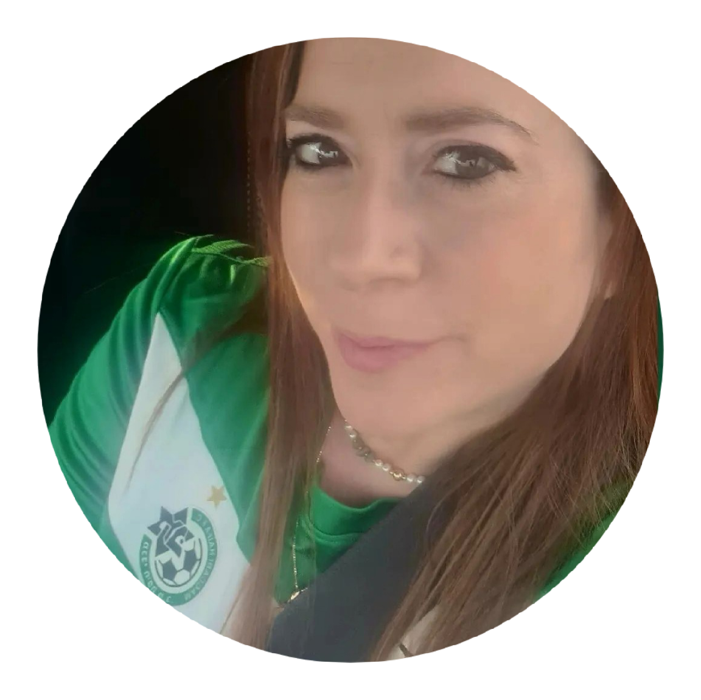
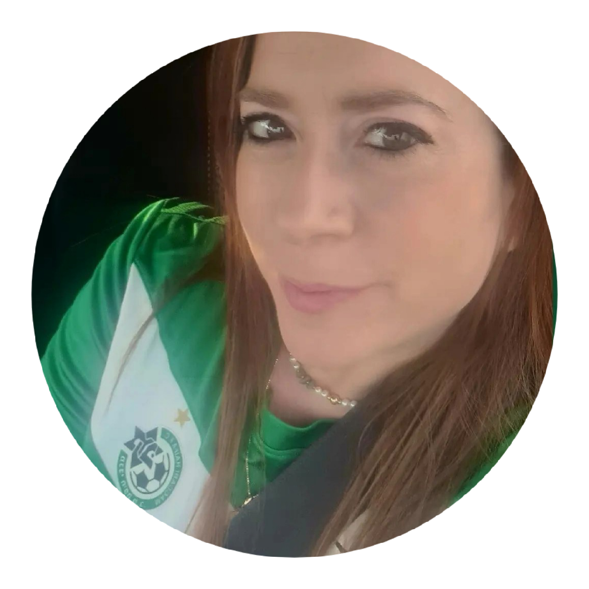
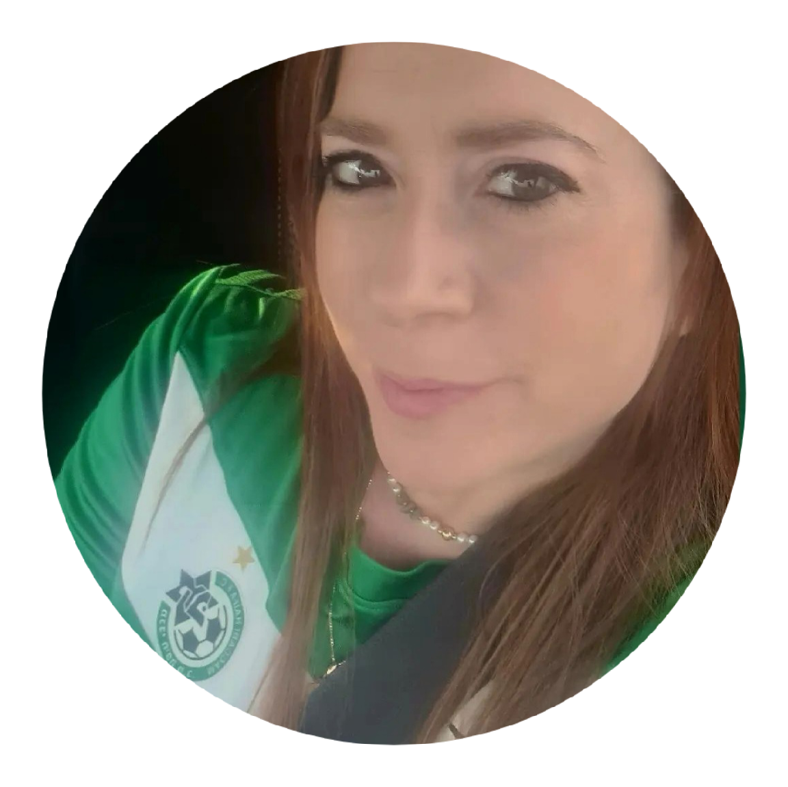
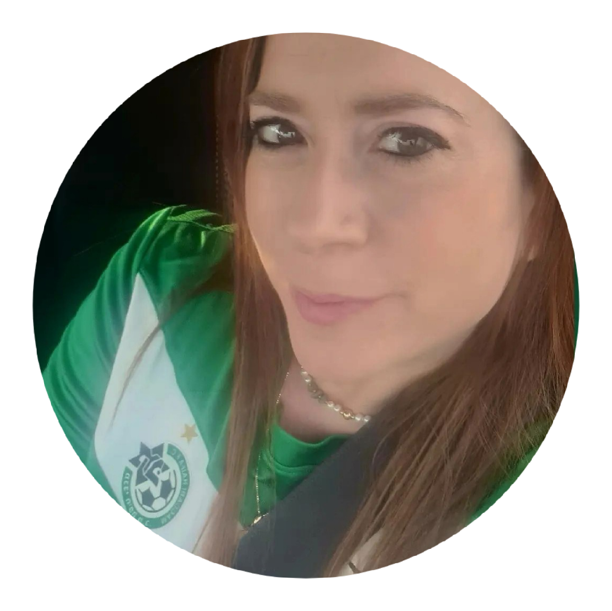

I don't really know how it happened.. But within a year, nearly five years ago, I figured out four close friends of mine,
plus my husband,
are Maccabi Haifa fans, So I had to check it out myself
and I found myself in "Sami Ofer" Stadium for the first time.
As a person who likes to learn and prepare for any scenario,
I had to do some "homework": memorize the words to all the cheer songs,
read a bit about the game and even learn what "Offside" is !!
From the warm-up to the whistle, I was drawn into the situation.
For the first time in my life, since having diagnosed "social anxiety"
and "Selective Mutism" since the age of 5,
I felt part of something big, part of a group.
That's how I became a Maccabi Haifa fan.
Maccabi Haifa Football Club is an Israeli football team from the city of Haifa.
a section of Maccabi Haifa sports club.
The club was founded in 1913 and plays in the Israeli Premier League.
Maccabi Haifa home games are played at Sammy Ofer Stadium.
As the local football association wasn't founded in until July 1928
there were no officially organized competitions during the season, and the club played only friendly matches.
After a period of inactivity, the club was re-organized in February 1923.
The club playing a handful of matches during the season, including taking part in a cup competition
which was called "The Hebrew Cup".
Due to its distance, the club was given a bye to the final, which it lost to Maccabi Nes Tziona 0-2
The club was overshadowed by its city rival Hapoel Haifa, but even in its first years adopted a very adventurous
and offensive style of play based on technique and short passes.
In 1942, the club reached the Israel State Cup final, but was defeated 12-1 by Beitar Tel Aviv in the final.
Maccabi Haifa remained a small club that spent most of its time shifting between Liga Leumit and the lower leagues.
In 1962, the team defeated Maccabi Tel Aviv 5-2 in the State Cup final, and won the first title of the club.
In 1963 it reached the final again, but lost to Hapoel Haifa 1-0 in the first Haifa derby in State Cup final.
In the 1980s Maccabi Haifa finally entered the 'Israeli' champions' club, clinching the title thrice (in 1983-84, 1984-85 and 1988-89 seasons).
In the 1983-84 season Maccabi Haifa won its first ever championship, under coach Shlomo Sharf
The Yerukim (Greens) were known for their "all-around-offense" and flashy technique football style.
MHFC is one of the country's most successful teams in Europe.
Being the first Israeli club to qualify for the group stage
of the UEFA Champions League.
The club has won 15 championships!!!
6 State Cups
5 Toto Cups